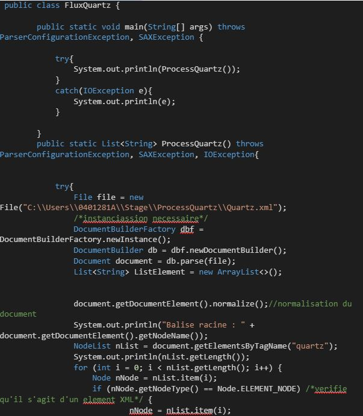
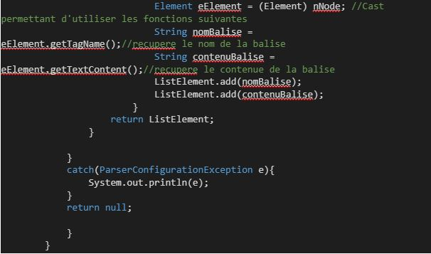

Creation d'un nouveau flux de données
Permettre a deux applications de pouvoir échanger des données de maniere fluide et securisée
Le fichier en entrée est de type file, il passe à la phase suivante grâce à un quartz. On récupère les informations du quartz grâce a ce code qui permet de filtrer le fichiers xml comprenant les balises quartz :
 Tout les details sur comment fonctionne le flux se trouve ici :
Documentation_Base_Statistique.pptx